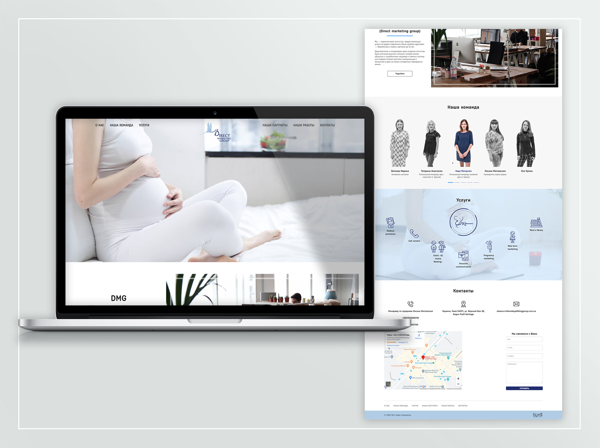
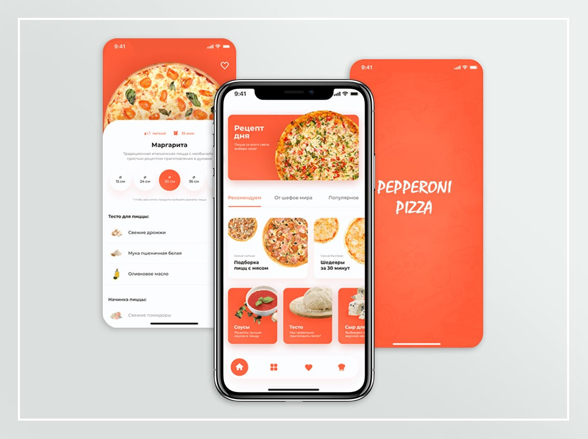
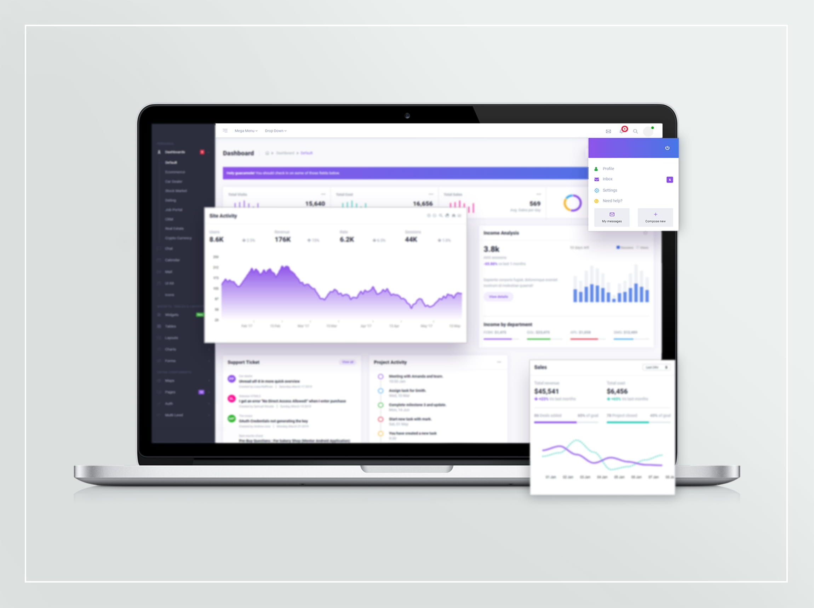
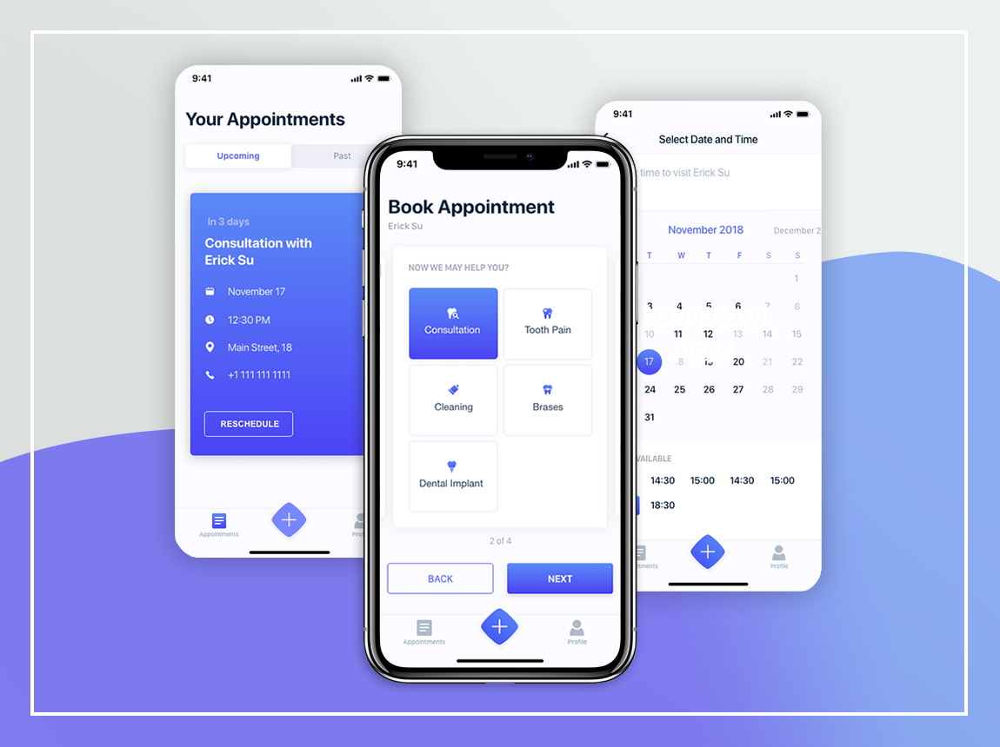

Web Development for DMG.
This is a landing page for the marketing agency that helps companies to communicate with their target audience which includes women who are rising babies or are pregnant. This project helps giant companies to hear ordinary women’s opinions and to implement their needs. We were happy to realize the DMG project. It makes everyone happy as a result. The aim was to implement a landing page with a flat structure, easy to understand both for companies and ordinary website visitors
TECHNOLOGIES/SERVICES:
Web, UX/UI, QA, PHP, Project Management

Pepperoni Pizza App
We have created a very user-friendly pizza delivery application for Pepperoni Pizza Cafe. The application makes it easy to view and select the type of pizza or to create the one with your favorite ingredients. The aim was to create an easy to use application to help people quickly go through all the steps from the idea of eating pizza to a knock at the door by a pizza guy.
TECHNOLOGIES/SERVICES:
Web, UX/UI, QA, React Native, Node.js, Project Management

ScythGames CRM system
We have created a CRM system for internal use for ScythGames company. The main aim of the system is financial monitoring. The company creates Triple-A games and they gave us a task to create a system that will help them to control and systematize financial flows within the company. Our finely structured monitoring system with clearly defined parameters helps to facilitate and systematize financial control in ScythGames company.
TECHNOLOGIES/SERVICES:
React, node.js, devops, Web, UX/UI, QA, Project Management

Doctor appointment
The main idea of the application was to make it easier to make medical appointments and pay for them through the use of mobile phones. An appointment system has been introduced in health centres, reducing waiting times. Navigating the system is intuitive and doesn’t require extensive user training and practice, that makes it helpful for older people.
TECHNOLOGIES/SERVICES:
Mobile Design, UX/UI, QA, React Native, Node.js, Project Management